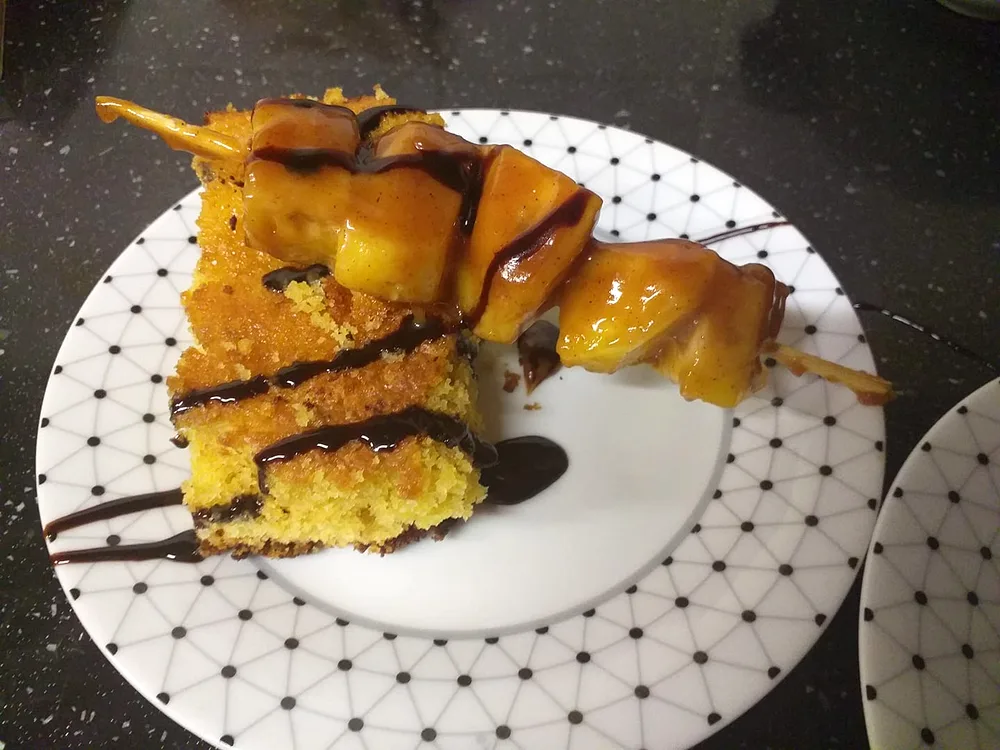
Gâteau ti son chocolat et sa brochette d'ananas caramélisé beurre salé et cannellePublication Facebook du gîte
Une maison de famille au cœur du cirque de Mafate, où l'on cuisine avec les fruits et les légumes de la cour.
Sur les GR R1 & GR R2 · Depuis 2019
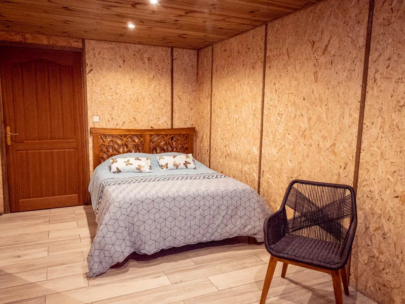
Une histoire de famille
Fleur des Orangers a ouvert ses portes début 2019, à l'Îlet des Orangers, un petit village niché dans les remparts du cirque. Une grande maison familiale moderne, tout près de l'école de l'îlet, qui porte d'ailleurs le nom du grand-père de la famille.
Ici, on perpétue l'accueil des Hauts : la terre se cultive derrière le gîte, les recettes se transmettent, et le soir, toute la tablée se retrouve autour du même repas.
« Profitons des fruits de la cour pour un bon dessert à mes clients… »Publication Facebook de la Chambre d'hôte Fleur des Orangers
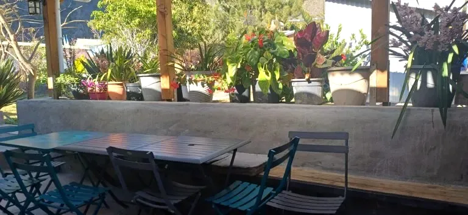
La table d'hôtes de Daniella
Oranges, ananas, maïs, salade, citrouille : la famille cultive à l'arrière du gîte et cuisine autant que possible avec sa propre récolte. Le dîner se partage en grande tablée, dans la convivialité.

Gâteau ti son chocolat et sa brochette d'ananas caramélisé beurre salé et cannellePublication Facebook du gîte
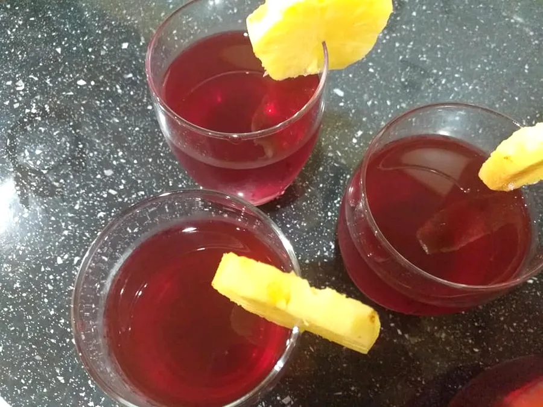
Jus bissap, ananas la cour et confiture maisonPublication Facebook du gîte
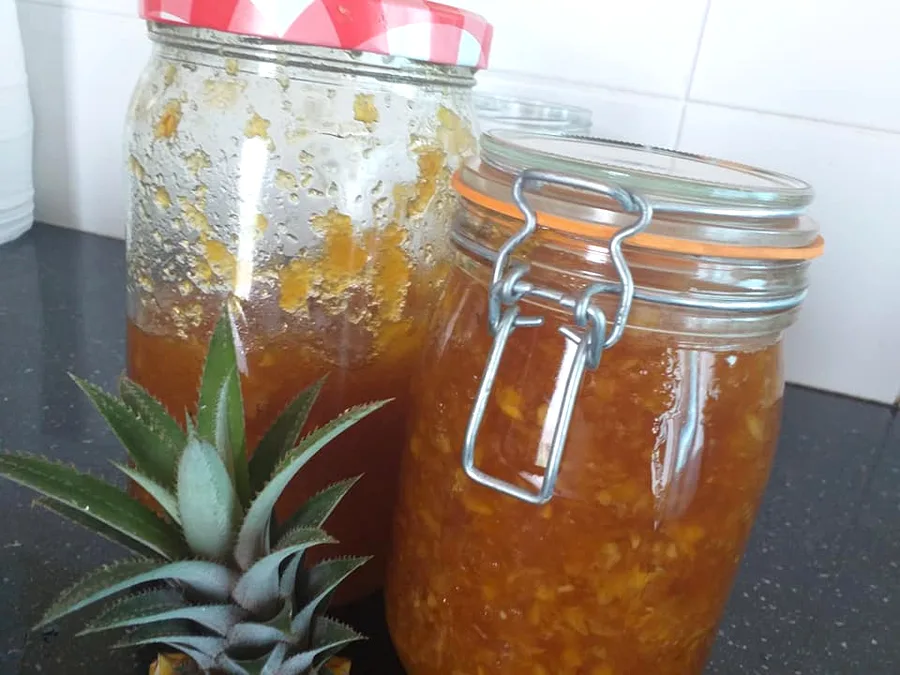
Confiture maisonÀ l'ananas, au petit-déjeuner
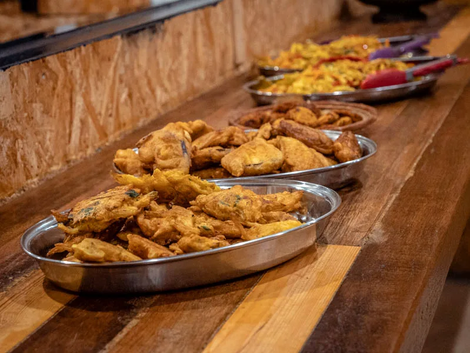
Beignets de légumes faits maisonPour l'apéritif, avec le punch
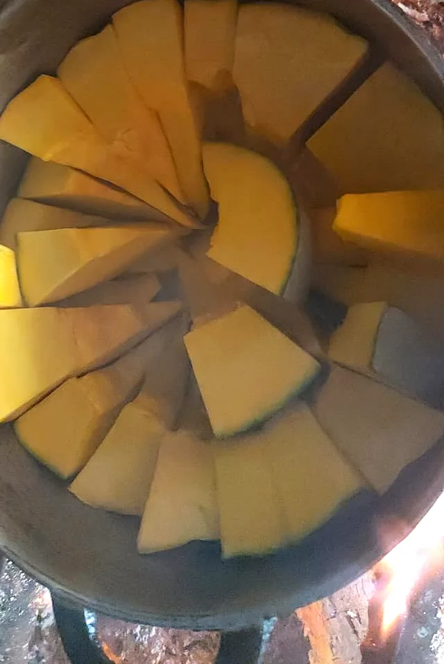
Citrouille au feu de boisPublication Facebook du gîte, « La saison »
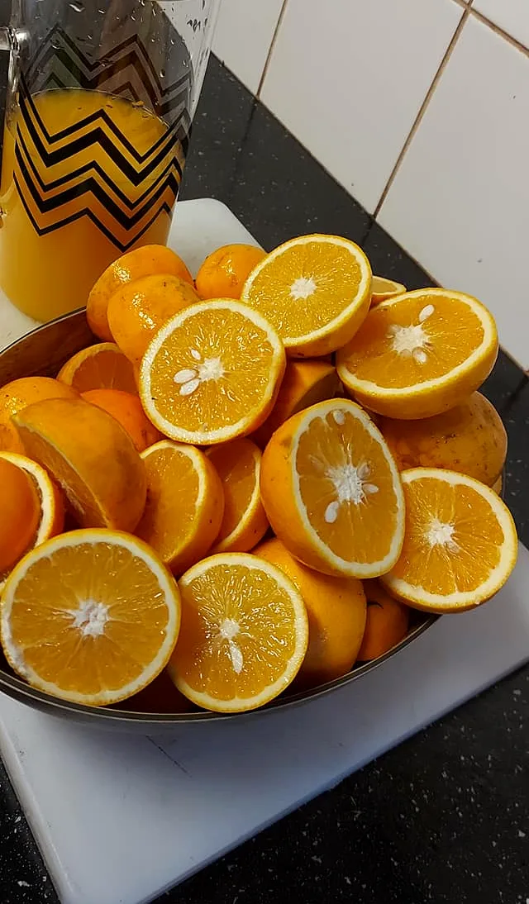
La saison : agrumes, citrouille… il faut en profiter !Publication Facebook du gîte
← Faites glisser pour voir la suite →
Dormir à l'îlet
Des dortoirs soignés pour les groupes comme pour les marcheurs seuls, une chambre double pour les couples, et des sanitaires modernes. Draps, couvertures et oreillers sont fournis.
Pour les couples et ceux qui aiment l'intimité, avec sa propre salle d'eau et une belle vue sur le Maïdo.
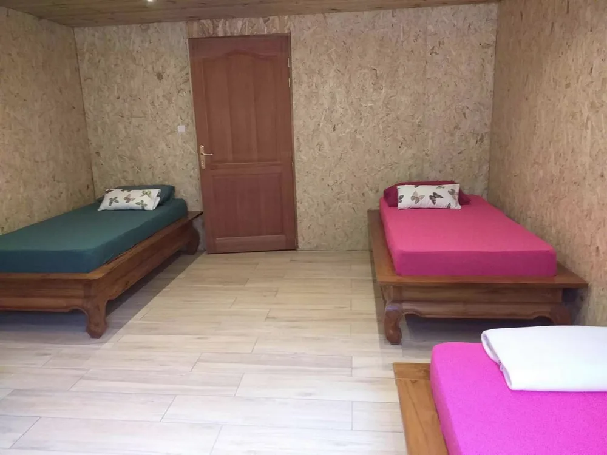
Une literie confortable, pensée pour les séjours en montagne, et une prise dans chaque chambre.
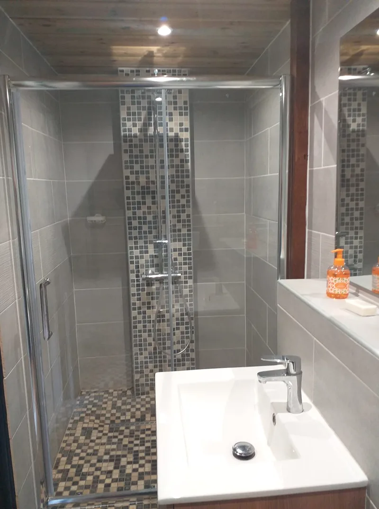
Des sanitaires modernes, dont une douche aménagée pour les personnes à mobilité réduite. Ici, la douche à l'italienne de la chambre couple.
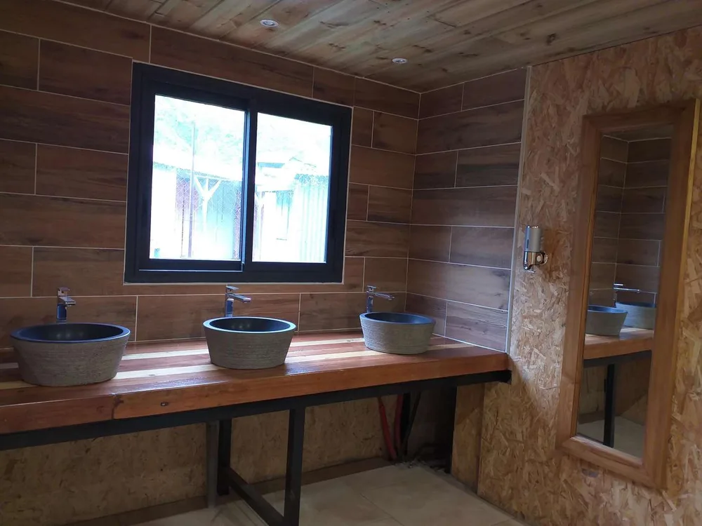
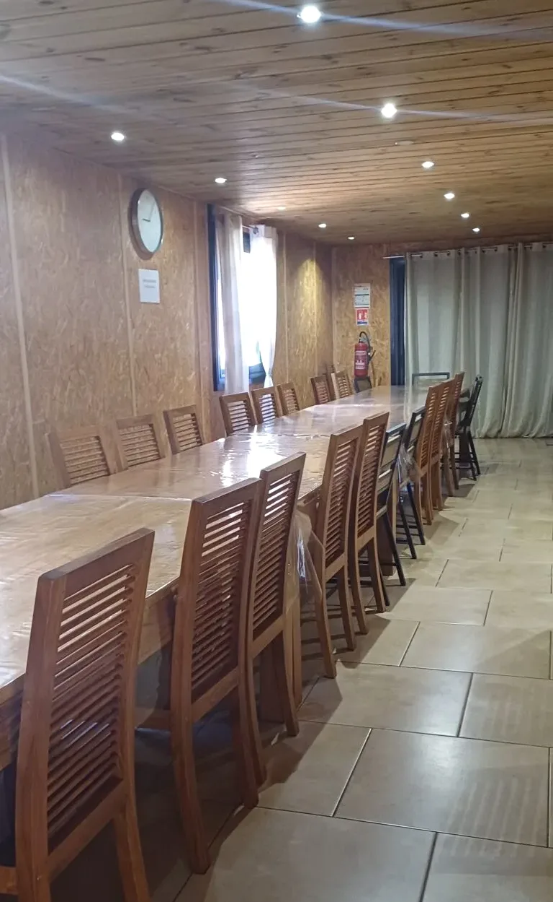
Le séjour se réserve en demi-pension : la nuit, le dîner en table d'hôtes et le petit-déjeuner. Pensez à glisser votre serviette dans le sac à dos.
Demander une dateVenir à pied
L'Îlet des Orangers se rejoint à pied, comme tout Mafate : une vraie aventure, qui donne encore plus de saveur à l'arrivée.
Au départ de Sans-Souci, un sentier en balcon très apprécié, avec des points de vue sur la Rivière des Galets et Cap Noir.
Depuis Deux Bras, environ 3 heures de remontée.
Environ 3 heures de descente, plus technique, pour les marcheurs aguerris.
Le gîte se trouve en bordure des GR R1 et GR R2 : une étape naturelle pour traverser le cirque.
Ils sont passés par l'îlet
« Un accueil au top, une cuisine délicieuse et un véritable sens de l'hospitalité. »
« Le repas réunionnais était absolument délicieux, un vrai régal et une belle découverte des saveurs locales. »
Offrir pour Noël
Un cadeau qui se vit à pied, en pleine nature : une étape à l'Îlet des Orangers, avec le dîner créole en grande tablée et le petit-déjeuner au lever du jour.
Une nuit en demi-pension à offrir à un marcheur, un couple ou toute une bande d'amis.
Trois sentiers au choix, et le plaisir de découvrir la vie de l'îlet autour de la table.
Illustration
Réservation
Adresse · Îlet des Orangers, Mafate, 97419 La Possession
Téléphone · 0692 37 44 08
E-mail · lafleurdesorangers@gmail.com
Formule · demi-pension : nuit, dîner, petit-déjeuner
Paiement · espèces ou carte bancaire
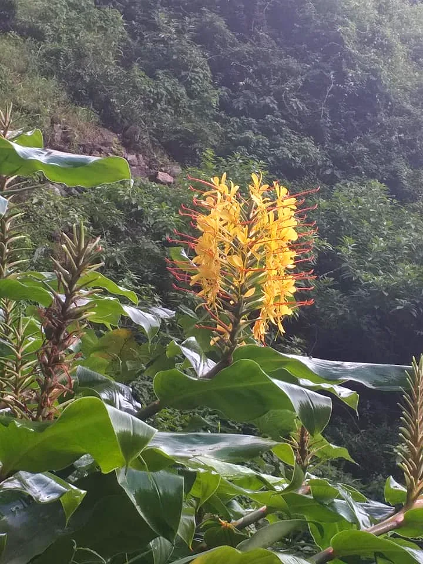